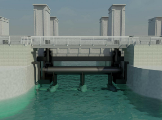

In het kader van De Nieuwe Afsluitdijk wordt gewerkt aan de voorbereiding van een demonstratieproject voor een spuistroomcentrale waarin we maar liefst 15 tot 20 turbines willen opnemen. Als dit lukt kunnen deze in totaal een vermogen van maximaal 5MW opleveren. Dit komt neer op een stroomvoorziening voor circa 1.000 huishoudens. Hiervoor is een business case uitgewerkt en momenteel wordt de engineering van het project uitgevoerd. Als alles doorgaat hopen we eind 2018 in Kornwerderzand het demonstratieproject te kunnen opleveren.
Organisatie Kornwerderzand Tidal BV heeft tot doel om een spuistroomcentrale te ontwikkelen en te exploiteren bij Kornwerderzand. Hiervoor wordt samengewerkt met:
De energie wordt opgewekt dmv vrije stromingsturbines, welke middels een ophangconstructie in de openingen van de spuikoker worden geplaatst.
